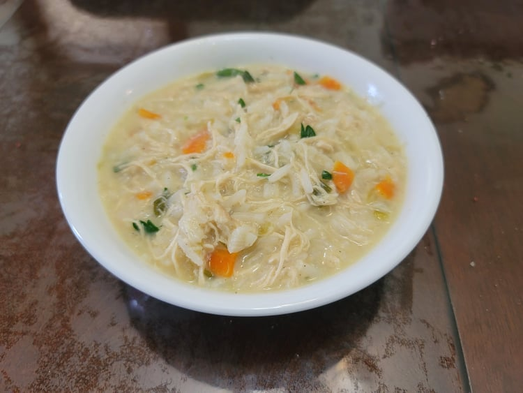

Avgolemono

Ingredients:
- 2 lb Cooked shredded chicken breast
- 1 tbsp Olive oil
- 1 Carrot, diced
- 3 stalks Celery, diced
- 5-6 Scallions, finely chopped
- 2 cloves Garlic, minced
- 2 quarts Low sodium chicken broth
- 2 Bay leaves
- Salt, to taste
- Black pepper, to taste
- 1 cup Uncooked rice, rinsed OR 1 cup Orzo
- 1/2 cup Lemon juice
- 2 eggs
- 2 tbsp Parsley, chopped
Instructions:
- In a large pot, heat the olive oil over medium to medium-high heat. Add in the celery, carrots, and scallions and sauté for 2-3 minutes. Then add in the garlic and sauté for another 2-3 minutes.
- Add in the chicken broth and bay leaves. Bring to a rolling boil and then reduce to medium-low to simmer. And in salt and pepper to taste. Then add in the rice or orzo. Let simmer for 20 minutes for the rice, or about 7 minutes for the orzo.
- After the soup has simmered, add in the shredded chicken and let come back up to heat.
- In a separate bowl, whisk together the lemon juice and eggs. Then temper the eggs by slowly whisking in 2 ladles of the soup into the bowl. Remove the soup pot from the heat and mix in the egg mixture into the soup.
- Stir in the parsley right before serving. Serve hot.